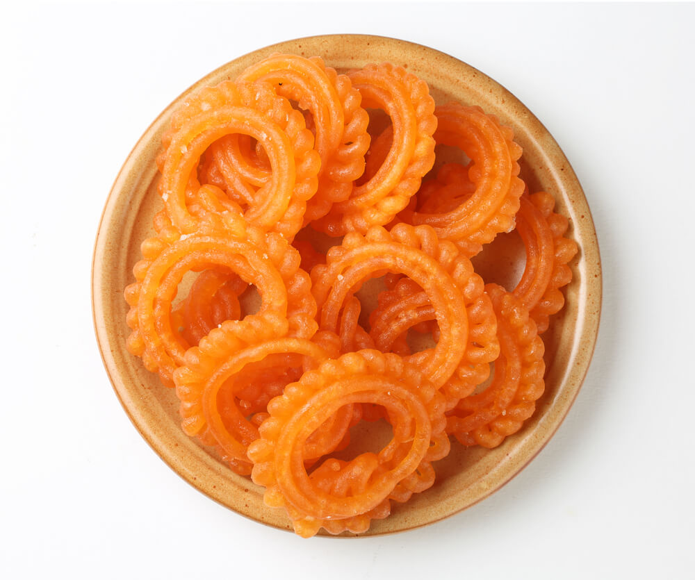

Recipe of Imarti

Ingredients
- 2 Cups Dhuli urad dal (husked Bengal Gram - soaked in water overnight)
- 3 cups Sugar
- 1 1/2 cups Water
- Saffron color
- 1/2 tsp Cardamom ground
- 500 gram Ghee (to fry)
Procedure
-
Wash, drain and grind the daal with minimum water (should be thick). Mix in the colour.
-
Beat daal well till fluffy, a drop dropped in water should float.
-
Keep aside to ferment for 3-4 hours in Summer, more in Winter.
-
Dissolve sugar in the water over low heat, stirring continuously till sugar is dissolved (do not let
it come to a boil before that).
For the mixture:
-
Cook till one thread consistency (a drop pressed between fingers and pulled apart, should form a
thin thread).
-
Add cardamom powder. Pipe the batter with a nozzle or cloth with a hole, to form imartis straight
into the hot ghee.
-
Lower flame and allow to crisp turning once.
-
Remove from ghee, drop into the hot syrup for 3-4 minutes, drain and serve.
Watch the video!!!!